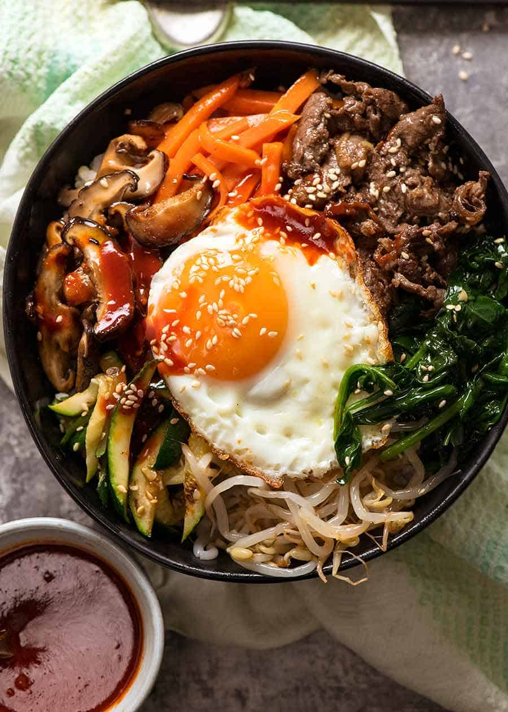
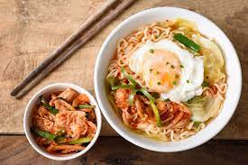

Korean Dishes
Famous food in South Korea
 |  | ||
 |  |
| | | ||
| | |

Description about bibimbap
Bibimbap is a Korean dish of rice with cooked vegetables, usually meat, and often a raw or fried egg In Korea,.
some foods trickled down from the Imperial palace and others have humbler origins.
Bibimbap is a healthy food because it offers a balance of all three macronutrients
it offers a balance of all three macronutrients which translates to a suitable range of calories.
It is also a large variety of pickled vegetables which offers many different micronutrients such as fiber and certain vitamins.
Description about Gimbap
Gimbap is a sauteed vegetables, ground beef, sweet pickled radish.
and rice are rolled and tightly wrapped in a sheet of laver seaweed (gim),.
and then sliced into bite-sized circles. .
Description about Kalguksu
Kal-guksu is a Korean noodle dish consisting of handmade,
knife-cut wheat flour noodles served in a large bowl with broth and other ingredients

Description about ramyeon
Bring the Korean ramen broth to a boil. Ladle the broth, noodles and chicken into a bowl.
Top with the eggs, green onions, enoki mushrooms and kimchi.
And then, Korean Ramen are now going worldwide because of the good taste.